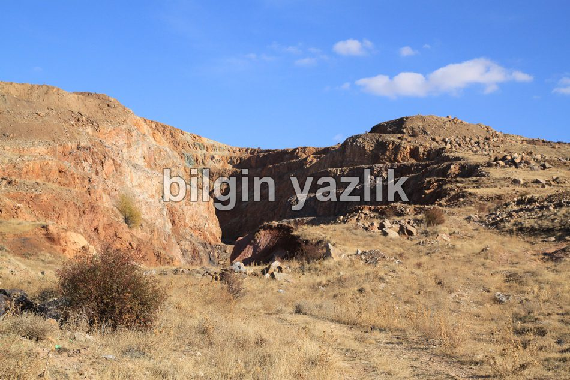
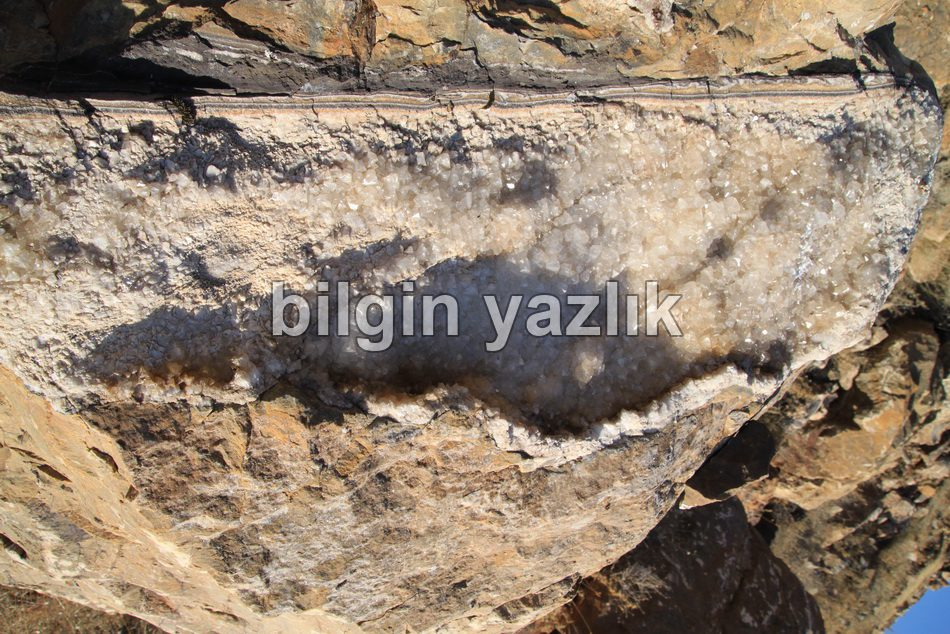
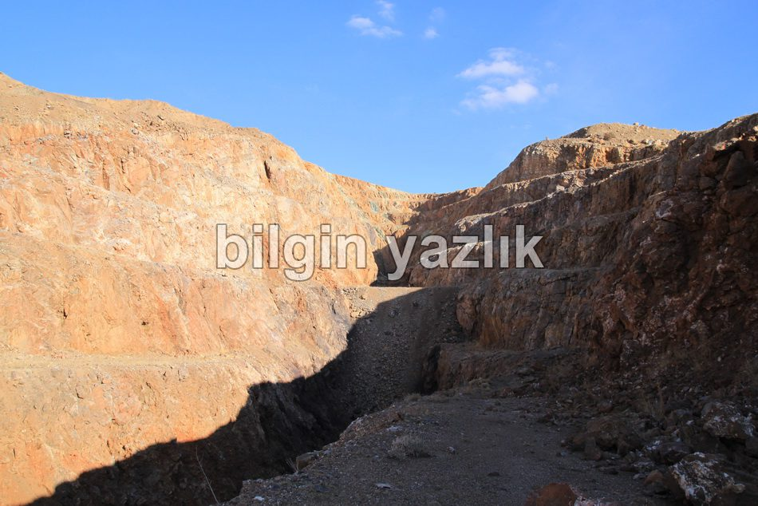
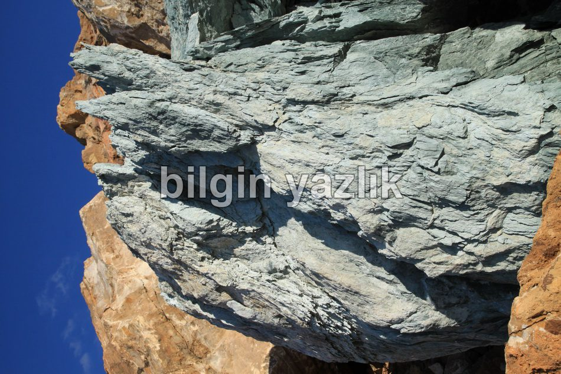

Kayseri & Koramaz · 8 Haziran 2017
Taçın (Top Söğüt) Demir Madeni
Kayseri’nin Bünyan ilçesine bağlı Top Söğüt yeni adı ile Taçın köyünü geçtikten sonra başlayan stabilize yolu takip ederek bu devasa terkedilmiş madene ulaşabilirsiniz. Maden 1965 yılında ruhsatlandırılmış ve 1975 yılında işletmeye alınmış. Maden şu an tamamen terkedilmiş ve içinde gezerken ilginç bir ruh haline bürünüyorsunuz. Çünkü işçilerin kaldıkları yapılar, yönetim binası virane halde ancak hala ayakta duruyor ve içinde yaşanmışlık izleri barındırıyor. Maden çok büyük ve çok derin, madenden %52 oranında demir çıkarıldığını internetteki araştırmalarımdan okudum. İlginç bir yer görmek istiyorsanız, ziyaret edebilirsiniz.




Bu yazı taliyol arşivinden taşınmıştır. · özgün kayıt